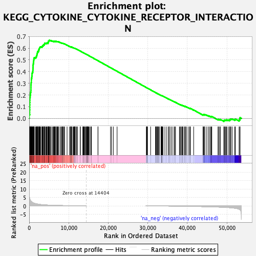

| | | Dataset | cond1.vs.cond3 |
| Phenotype | NoPhenotypeAvailable |
| Upregulated in class | na_pos |
| GeneSet | KEGG_CYTOKINE_CYTOKINE_RECEPTOR_INTERACTION |
| Enrichment Score (ES) | 0.6660448 |
| Normalized Enrichment Score (NES) | 2.1370173 |
| Nominal p-value | 0.0 |
| FDR q-value | 0.0 |
| FWER p-Value | 0.0 |
Table: GSEA Results Summary

Fig 1: Enrichment plot: KEGG_CYTOKINE_CYTOKINE_RECEPTOR_INTERACTION
Profile of the Running ES Score & Positions of GeneSet Members on the Rank Ordered List
| SYMBOL | RANK IN GENE LIST | RANK METRIC SCORE | RUNNING ES | CORE ENRICHMENT | | 1 | EGF | 39 | 6.258 | 0.0314 | Yes |
| 2 | TNFRSF4 | 150 | 4.194 | 0.0509 | Yes |
| 3 | TNFRSF17 | 151 | 4.185 | 0.0724 | Yes |
| 4 | CTF1 | 161 | 4.133 | 0.0935 | Yes |
| 5 | CXCL14 | 164 | 4.117 | 0.1146 | Yes |
| 6 | CCR10 | 169 | 4.080 | 0.1355 | Yes |
| 7 | TSLP | 176 | 4.040 | 0.1561 | Yes |
| 8 | TNFRSF11B | 186 | 3.929 | 0.1761 | Yes |
| 9 | CCL19 | 251 | 3.494 | 0.1929 | Yes |
| 10 | TNFSF11 | 310 | 3.186 | 0.2081 | Yes |
| 11 | CXCL6 | 353 | 3.019 | 0.2229 | Yes |
| 12 | HGF | 414 | 2.837 | 0.2363 | Yes |
| 13 | CXCL12 | 437 | 2.798 | 0.2503 | Yes |
| 14 | LTB | 443 | 2.776 | 0.2644 | Yes |
| 15 | BMPR1B | 450 | 2.767 | 0.2785 | Yes |
| 16 | TGFB1 | 463 | 2.722 | 0.2923 | Yes |
| 17 | CCL13 | 491 | 2.664 | 0.3055 | Yes |
| 18 | CCL11 | 540 | 2.556 | 0.3177 | Yes |
| 19 | IL17A | 543 | 2.551 | 0.3308 | Yes |
| 20 | KIT | 576 | 2.502 | 0.3430 | Yes |
| 21 | CD27 | 655 | 2.332 | 0.3536 | Yes |
| 22 | GHR | 677 | 2.288 | 0.3649 | Yes |
| 23 | TGFB3 | 725 | 2.203 | 0.3754 | Yes |
| 24 | TNFRSF18 | 728 | 2.199 | 0.3866 | Yes |
| 25 | LIFR | 821 | 2.047 | 0.3954 | Yes |
| 26 | IL23R | 916 | 1.923 | 0.4035 | Yes |
| 27 | TNFRSF8 | 920 | 1.918 | 0.4133 | Yes |
| 28 | CSF1R | 956 | 1.878 | 0.4223 | Yes |
| 29 | CCR3 | 962 | 1.875 | 0.4319 | Yes |
| 30 | IL10 | 980 | 1.852 | 0.4410 | Yes |
| 31 | TNFSF12 | 985 | 1.848 | 0.4505 | Yes |
| 32 | PDGFC | 1013 | 1.825 | 0.4593 | Yes |
| 33 | IL12A | 1036 | 1.805 | 0.4682 | Yes |
| 34 | CCL23 | 1058 | 1.781 | 0.4770 | Yes |
| 35 | CCL2 | 1094 | 1.748 | 0.4853 | Yes |
| 36 | TGFB2 | 1140 | 1.704 | 0.4932 | Yes |
| 37 | TGFBR2 | 1172 | 1.670 | 0.5012 | Yes |
| 38 | ACVRL1 | 1180 | 1.666 | 0.5096 | Yes |
| 39 | TNFSF18 | 1235 | 1.616 | 0.5169 | Yes |
| 40 | OSMR | 1482 | 1.429 | 0.5196 | Yes |
| 41 | CCL17 | 1702 | 1.297 | 0.5222 | Yes |
| 42 | CCL14 | 1773 | 1.263 | 0.5274 | Yes |
| 43 | TNFRSF1A | 1878 | 1.206 | 0.5316 | Yes |
| 44 | PRL | 1908 | 1.188 | 0.5372 | Yes |
| 45 | LEPR | 1933 | 1.176 | 0.5428 | Yes |
| 46 | PLEKHO2 | 1984 | 1.150 | 0.5478 | Yes |
| 47 | IL1R1 | 2028 | 1.131 | 0.5528 | Yes |
| 48 | IL22RA2 | 2049 | 1.124 | 0.5582 | Yes |
| 49 | TNFRSF10C | 2098 | 1.097 | 0.5629 | Yes |
| 50 | CCL22 | 2155 | 1.077 | 0.5674 | Yes |
| 51 | TNFRSF19 | 2161 | 1.075 | 0.5728 | Yes |
| 52 | CCL18 | 2363 | 0.994 | 0.5742 | Yes |
| 53 | PDGFA | 2378 | 0.989 | 0.5790 | Yes |
| 54 | CCR1 | 2442 | 0.969 | 0.5828 | Yes |
| 55 | IL17B | 2445 | 0.969 | 0.5877 | Yes |
| 56 | NGFR | 2530 | 0.937 | 0.5910 | Yes |
| 57 | CD70 | 2569 | 0.924 | 0.5950 | Yes |
| 58 | PDGFRA | 2583 | 0.917 | 0.5995 | Yes |
| 59 | IL5RA | 2635 | 0.905 | 0.6031 | Yes |
| 60 | CX3CR1 | 2718 | 0.878 | 0.6061 | Yes |
| 61 | CCL8 | 2771 | 0.863 | 0.6096 | Yes |
| 62 | CCL24 | 2882 | 0.828 | 0.6118 | Yes |
| 63 | XCL1 | 3196 | 0.744 | 0.6097 | Yes |
| 64 | PDGFRB | 3224 | 0.741 | 0.6130 | Yes |
| 65 | IL13RA1 | 3352 | 0.718 | 0.6143 | Yes |
| 66 | CSF2RB | 3361 | 0.717 | 0.6179 | Yes |
| 67 | CCL21 | 3405 | 0.708 | 0.6207 | Yes |
| 68 | IL22 | 3553 | 0.682 | 0.6215 | Yes |
| 69 | CXCL13 | 3578 | 0.678 | 0.6245 | Yes |
| 70 | FLT4 | 3581 | 0.677 | 0.6279 | Yes |
| 71 | IL6ST | 3788 | 0.640 | 0.6274 | Yes |
| 72 | CXCR2 | 3823 | 0.634 | 0.6300 | Yes |
| 73 | TGFBR1 | 3841 | 0.632 | 0.6329 | Yes |
| 74 | IL19 | 3868 | 0.626 | 0.6356 | Yes |
| 75 | AMHR2 | 3921 | 0.618 | 0.6378 | Yes |
| 76 | IFNAR1 | 3927 | 0.616 | 0.6409 | Yes |
| 77 | CCL5 | 3982 | 0.606 | 0.6430 | Yes |
| 78 | IL10RB | 4216 | 0.569 | 0.6416 | Yes |
| 79 | IL2RB | 4324 | 0.552 | 0.6424 | Yes |
| 80 | IL20RA | 4480 | 0.530 | 0.6422 | Yes |
| 81 | IL20RB | 4515 | 0.525 | 0.6443 | Yes |
| 82 | OSM | 4760 | 0.496 | 0.6423 | Yes |
| 83 | CD40LG | 4790 | 0.493 | 0.6442 | Yes |
| 84 | EDA2R | 4796 | 0.492 | 0.6467 | Yes |
| 85 | IL20 | 4808 | 0.490 | 0.6490 | Yes |
| 86 | TNFRSF13B | 4816 | 0.488 | 0.6514 | Yes |
| 87 | CXCR1 | 4825 | 0.487 | 0.6537 | Yes |
| 88 | EPOR | 4828 | 0.487 | 0.6562 | Yes |
| 89 | PF4V1 | 4838 | 0.486 | 0.6585 | Yes |
| 90 | CXCL10 | 4961 | 0.472 | 0.6586 | Yes |
| 91 | IL3RA | 4966 | 0.470 | 0.6610 | Yes |
| 92 | TNFSF10 | 5027 | 0.463 | 0.6622 | Yes |
| 93 | AMH | 5047 | 0.461 | 0.6643 | Yes |
| 94 | LTA | 5078 | 0.458 | 0.6660 | Yes |
| 95 | VEGFB | 5206 | 0.443 | 0.6659 | No |
| 96 | IL26 | 5440 | 0.418 | 0.6637 | No |
| 97 | IFNE | 5494 | 0.412 | 0.6649 | No |
| 98 | IFNAR2 | 5809 | 0.383 | 0.6609 | No |
| 99 | CSF1 | 6040 | 0.361 | 0.6585 | No |
| 100 | KDR | 6191 | 0.350 | 0.6575 | No |
| 101 | CCL28 | 6293 | 0.341 | 0.6573 | No |
| 102 | BMPR2 | 6319 | 0.339 | 0.6586 | No |
| 103 | BMP7 | 6427 | 0.331 | 0.6583 | No |
| 104 | FAS | 6570 | 0.318 | 0.6573 | No |
| 105 | LIF | 6607 | 0.315 | 0.6582 | No |
| 106 | IL18RAP | 6614 | 0.314 | 0.6597 | No |
| 107 | INHBE | 6918 | 0.301 | 0.6556 | No |
| 108 | IFNLR1 | 6919 | 0.301 | 0.6571 | No |
| 109 | CX3CL1 | 7097 | 0.290 | 0.6553 | No |
| 110 | PDGFB | 7191 | 0.282 | 0.6550 | No |
| 111 | CCR7 | 7273 | 0.276 | 0.6549 | No |
| 112 | FLT3LG | 7310 | 0.272 | 0.6556 | No |
| 113 | CSF2RA | 7526 | 0.258 | 0.6529 | No |
| 114 | IFNGR2 | 7899 | 0.237 | 0.6472 | No |
| 115 | IFNA8 | 8111 | 0.228 | 0.6444 | No |
| 116 | CNTFR | 8316 | 0.215 | 0.6417 | No |
| 117 | TNFSF15 | 8383 | 0.212 | 0.6415 | No |
| 118 | FASLG | 8424 | 0.209 | 0.6419 | No |
| 119 | BMPR1A | 8505 | 0.204 | 0.6414 | No |
| 120 | XCR1 | 8707 | 0.191 | 0.6386 | No |
| 121 | ACVR1B | 8800 | 0.185 | 0.6379 | No |
| 122 | CCR5 | 8968 | 0.176 | 0.6356 | No |
| 123 | IFNA16 | 9581 | 0.173 | 0.6251 | No |
| 124 | CXCL9 | 10170 | 0.165 | 0.6149 | No |
| 125 | TNF | 10460 | 0.150 | 0.6103 | No |
| 126 | TNFRSF10B | 10509 | 0.148 | 0.6101 | No |
| 127 | IL4R | 10517 | 0.148 | 0.6107 | No |
| 128 | CSF3R | 10557 | 0.146 | 0.6108 | No |
| 129 | IL21R | 10582 | 0.145 | 0.6111 | No |
| 130 | IL18R1 | 10714 | 0.138 | 0.6093 | No |
| 131 | CCL7 | 10730 | 0.137 | 0.6097 | No |
| 132 | IL10RA | 11058 | 0.121 | 0.6042 | No |
| 133 | ACVR2A | 11225 | 0.111 | 0.6017 | No |
| 134 | EDA | 11359 | 0.107 | 0.5998 | No |
| 135 | CSF2 | 11462 | 0.102 | 0.5984 | No |
| 136 | BMP2 | 11532 | 0.098 | 0.5976 | No |
| 137 | CCR8 | 11534 | 0.098 | 0.5981 | No |
| 138 | TNFRSF14 | 11537 | 0.098 | 0.5985 | No |
| 139 | TNFSF13B | 11641 | 0.095 | 0.5971 | No |
| 140 | IL2RA | 11911 | 0.083 | 0.5925 | No |
| 141 | TNFSF8 | 12084 | 0.075 | 0.5896 | No |
| 142 | IFNG | 12176 | 0.071 | 0.5883 | No |
| 143 | IFNW1 | 12918 | 0.060 | 0.5747 | No |
| 144 | FLT3 | 12930 | 0.060 | 0.5748 | No |
| 145 | ACVR1 | 13562 | 0.034 | 0.5632 | No |
| 146 | IFNGR1 | 13650 | 0.030 | 0.5617 | No |
| 147 | TNFRSF9 | 13656 | 0.030 | 0.5618 | No |
| 148 | CCL16 | 13794 | 0.024 | 0.5593 | No |
| 149 | KITLG | 13885 | 0.020 | 0.5578 | No |
| 150 | IL18 | 13981 | 0.016 | 0.5561 | No |
| 151 | IL12RB1 | 14130 | 0.010 | 0.5533 | No |
| 152 | CXCR3 | 14250 | 0.005 | 0.5511 | No |
| 153 | CCL26 | 14409 | 0.000 | 0.5482 | No |
| 154 | CCL1 | 14577 | 0.000 | 0.5450 | No |
| 155 | IL2 | 14584 | 0.000 | 0.5449 | No |
| 156 | IL23A | 14591 | 0.000 | 0.5448 | No |
| 157 | TNFSF4 | 14631 | 0.000 | 0.5441 | No |
| 158 | IFNA6 | 14648 | 0.000 | 0.5438 | No |
| 159 | CCR2 | 14659 | 0.000 | 0.5436 | No |
| 160 | GDF5 | 14708 | 0.000 | 0.5427 | No |
| 161 | CCL25 | 14752 | 0.000 | 0.5419 | No |
| 162 | IL9 | 14884 | 0.000 | 0.5394 | No |
| 163 | IFNK | 14904 | 0.000 | 0.5391 | No |
| 164 | VEGFC | 14926 | 0.000 | 0.5387 | No |
| 165 | IL25 | 15083 | 0.000 | 0.5358 | No |
| 166 | TNFRSF10D | 15275 | 0.000 | 0.5322 | No |
| 167 | CCR4 | 15577 | 0.000 | 0.5266 | No |
| 168 | IFNA10 | 15677 | 0.000 | 0.5247 | No |
| 169 | IFNA2 | 15744 | 0.000 | 0.5235 | No |
| 170 | CCL27 | 17406 | 0.000 | 0.4924 | No |
| 171 | IFNA7 | 17410 | 0.000 | 0.4923 | No |
| 172 | IFNA13 | 20577 | 0.000 | 0.4330 | No |
| 173 | IFNA17 | 20837 | 0.000 | 0.4282 | No |
| 174 | IFNA4 | 21290 | 0.000 | 0.4197 | No |
| 175 | TNFRSF6B | 22238 | 0.000 | 0.4020 | No |
| 176 | CXCL11 | 29648 | -0.002 | 0.2632 | No |
| 177 | IL21 | 29695 | -0.004 | 0.2624 | No |
| 178 | IFNL3 | 29753 | -0.006 | 0.2613 | No |
| 179 | LTBR | 29806 | -0.007 | 0.2604 | No |
| 180 | IL15RA | 29810 | -0.008 | 0.2604 | No |
| 181 | IFNA14 | 29862 | -0.008 | 0.2595 | No |
| 182 | IFNA5 | 29928 | -0.008 | 0.2583 | No |
| 183 | GH1 | 30709 | -0.008 | 0.2437 | No |
| 184 | IFNA21 | 31988 | -0.008 | 0.2198 | No |
| 185 | GH2 | 31991 | -0.008 | 0.2198 | No |
| 186 | CCL20 | 32050 | -0.009 | 0.2188 | No |
| 187 | TNFRSF10A | 32197 | -0.014 | 0.2161 | No |
| 188 | IFNL1 | 32210 | -0.014 | 0.2160 | No |
| 189 | IL7R | 32449 | -0.022 | 0.2116 | No |
| 190 | PPBP | 32473 | -0.023 | 0.2113 | No |
| 191 | IL22RA1 | 32519 | -0.025 | 0.2106 | No |
| 192 | VEGFD | 32543 | -0.026 | 0.2103 | No |
| 193 | CSF3 | 32770 | -0.035 | 0.2062 | No |
| 194 | IFNL2 | 32860 | -0.038 | 0.2048 | No |
| 195 | CXCR5 | 32888 | -0.039 | 0.2045 | No |
| 196 | CCL4 | 33336 | -0.052 | 0.1964 | No |
| 197 | EPO | 33446 | -0.057 | 0.1946 | No |
| 198 | XCL2 | 33448 | -0.057 | 0.1949 | No |
| 199 | CXCR6 | 33450 | -0.057 | 0.1952 | No |
| 200 | TNFSF13 | 33501 | -0.059 | 0.1945 | No |
| 201 | CXCL5 | 33508 | -0.059 | 0.1947 | No |
| 202 | CCR6 | 33620 | -0.063 | 0.1930 | No |
| 203 | CRLF2 | 33659 | -0.065 | 0.1926 | No |
| 204 | IFNA1 | 33694 | -0.066 | 0.1923 | No |
| 205 | LEP | 33846 | -0.072 | 0.1898 | No |
| 206 | TNFRSF25 | 34335 | -0.085 | 0.1811 | No |
| 207 | IL7 | 34817 | -0.097 | 0.1726 | No |
| 208 | CXCL3 | 35278 | -0.114 | 0.1646 | No |
| 209 | IL24 | 35414 | -0.119 | 0.1627 | No |
| 210 | TNFRSF12A | 35423 | -0.119 | 0.1631 | No |
| 211 | TNFRSF13C | 35838 | -0.129 | 0.1560 | No |
| 212 | IL1R2 | 36152 | -0.137 | 0.1509 | No |
| 213 | FLT1 | 36640 | -0.158 | 0.1426 | No |
| 214 | IL12B | 36807 | -0.166 | 0.1403 | No |
| 215 | INHBA | 37013 | -0.171 | 0.1374 | No |
| 216 | IL3 | 37997 | -0.184 | 0.1199 | No |
| 217 | TNFRSF1B | 38191 | -0.193 | 0.1173 | No |
| 218 | TPO | 38342 | -0.201 | 0.1155 | No |
| 219 | TNFRSF21 | 38582 | -0.211 | 0.1121 | No |
| 220 | IL17RA | 38759 | -0.218 | 0.1099 | No |
| 221 | CXCL1 | 38762 | -0.218 | 0.1110 | No |
| 222 | IFNB1 | 38948 | -0.226 | 0.1087 | No |
| 223 | CXCL16 | 39330 | -0.235 | 0.1028 | No |
| 224 | PF4 | 39457 | -0.242 | 0.1017 | No |
| 225 | IL4 | 39493 | -0.244 | 0.1023 | No |
| 226 | IL11RA | 39798 | -0.259 | 0.0979 | No |
| 227 | PPBPP1 | 40220 | -0.269 | 0.0914 | No |
| 228 | TNFSF14 | 40601 | -0.280 | 0.0857 | No |
| 229 | IL11 | 40685 | -0.285 | 0.0856 | No |
| 230 | INHBC | 40763 | -0.290 | 0.0857 | No |
| 231 | IL9R | 41607 | -0.331 | 0.0716 | No |
| 232 | IL1B | 43970 | -0.438 | 0.0296 | No |
| 233 | IL6R | 43981 | -0.438 | 0.0316 | No |
| 234 | CLCF1 | 44091 | -0.445 | 0.0319 | No |
| 235 | IL13 | 44309 | -0.459 | 0.0302 | No |
| 236 | CXCL2 | 44344 | -0.462 | 0.0319 | No |
| 237 | IL1RAP | 44386 | -0.464 | 0.0335 | No |
| 238 | TNFSF9 | 44799 | -0.485 | 0.0283 | No |
| 239 | CXCL8 | 45248 | -0.513 | 0.0226 | No |
| 240 | CCL4L2 | 45574 | -0.536 | 0.0192 | No |
| 241 | EGFR | 45869 | -0.552 | 0.0166 | No |
| 242 | MPL | 46048 | -0.568 | 0.0161 | No |
| 243 | IL12RB2 | 46199 | -0.576 | 0.0163 | No |
| 244 | MET | 47771 | -0.703 | -0.0095 | No |
| 245 | CD40 | 47881 | -0.712 | -0.0079 | No |
| 246 | CCL3L1 | 48152 | -0.736 | -0.0092 | No |
| 247 | IL15 | 48365 | -0.756 | -0.0093 | No |
| 248 | TNFRSF11A | 49241 | -0.847 | -0.0213 | No |
| 249 | IL1A | 49347 | -0.857 | -0.0189 | No |
| 250 | CXCR4 | 49361 | -0.860 | -0.0147 | No |
| 251 | IL6 | 49616 | -0.893 | -0.0149 | No |
| 252 | CNTF | 49791 | -0.915 | -0.0134 | No |
| 253 | EDAR | 49958 | -0.934 | -0.0117 | No |
| 254 | CCL15 | 50335 | -0.986 | -0.0137 | No |
| 255 | IL2RG | 50687 | -1.043 | -0.0149 | No |
| 256 | IL17RB | 50717 | -1.049 | -0.0101 | No |
| 257 | RELT | 50909 | -1.081 | -0.0081 | No |
| 258 | CCR9 | 51017 | -1.103 | -0.0044 | No |
| 259 | ACVR2B | 51340 | -1.172 | -0.0044 | No |
| 260 | CCL3 | 52005 | -1.375 | -0.0098 | No |
| 261 | PRLR | 52161 | -1.430 | -0.0054 | No |
| 262 | IL5 | 53091 | -1.981 | -0.0126 | No |
| 263 | VEGFA | 53290 | -2.209 | -0.0050 | No |
| 264 | INHBB | 53337 | -2.296 | 0.0060 | No |
Table: GSEA details [plain text format]
Fig 2: KEGG_CYTOKINE_CYTOKINE_RECEPTOR_INTERACTION: Random ES distribution
Gene set null distribution of ES for KEGG_CYTOKINE_CYTOKINE_RECEPTOR_INTERACTION